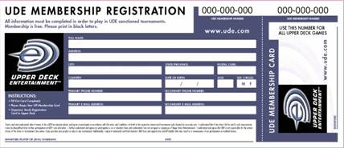

UDE公式トーナメントポリシー
2005年11月1日まで有効
翻訳バージョンの説明書は、Mantis のプログラム内、および Mantis のウェブサイト（www.ude.com/mantis）からダウンロードできます。
1 この文書の使用方法
アッパーデッキ･エンターテイメント(UDE)トーナメントポリシーはUDEトレーディング・カード・ゲーム(TCG)（VS.システムTCG、遊戯王TCGなど）のすべての公式トーナメント活動に適用されるルールと手順を伝達するために使用されます。これらのルールと手順は、プレイヤーがみなトーナメントで公平に楽しめることを保証するために存在します。
このポリシーの主なセクションはすべてのUDEゲームに当てはまり、すべてのゲームのために普遍的に続けます。このドキュメントの付録はそれぞれ異なるゲームに当てはまり、個々の特定のゲームに影響するトーナメントポリシーを含んでいます。
次のドキュメントが現存するか、開発中です:
UDE公式トーナメントポリシー:すべてのゲームに当てはまる一般ルール:
付録A: 遊戯王特有のトーナメントルール
付録B: VS.システム特有のトーナメントルール
付録P: ジャッジを支援するトーナメント･ペナルティ･ガイドライン
付録Z: トーナメント用語辞典‐頻繁な用語の定義
例: 付録Aは、遊戯王TCGにのみ適用されるルールを含んでいます。付録Bは、マーベルやDCコミックのTCGを包括したVS.システムにのみ適用されるルールを含んでいます。付録Pは、すべてのUDE公式トーナメントのペナルティ強化のためのガイドラインを含んでいます。
追加の付録は、得点計算や公式トーナメントの運営やトーナメントのジャッジやデモゲーム進行のような特別な部分用に作ってあります。
2 UDE公式トーナメントポリシー(OTP)‐バージョン情報
* 公式トーナメントポリシーのこのバージョンは2005年8月1日に更新されました。
* このドキュメントは2005年11月1日まで有効です。
* 最新のバージョンはUDE.com/policyで見つけることができます。
* 混乱を回避するために、このドキュメントの古いバージョンを削除するか破棄してください。
3 公式トーナメントのプレイヤーの資格
ほとんどのUDEトーナメントは制限なしですべてのプレイヤーに開放されています。プレイヤーは、好きなだけトーナメントに参加できます。
一部のトーナメントは年齢制限があり、特定の年齢のプレイヤーだけが参加できます。例えば、UDE奨学金シリーズは17歳以下のプレイヤーに制限されます。
UDEプロサーキット、ヨーロッパ選手権、アメリカ選手権のようないくつかのトーナメントは招待制となっており、そのイベントの招待権を得たプレイヤーだけが参加を認められます。
トーナメントの主催者は、プレイヤーが意図的に窃盗または公共施設の破壊や、会場の施設の規則違反、他のトーナメントポリシーへの違反などをしていない限り、参加することを禁じることができません。
次の基準に抵触する者は公式UDEトーナメントに参加できません:
* トーナメントのジャッジスタッフ、スコアキーパー、主催者を含むそのトーナメントスタッフ全般。
* ポリシー違反のためにUDEによって資格停止されたプレイヤー。
* アッパーデッキ、コナミ、Viz Media、マーべル、D.C.コミックなどの従業員は、それらの会社によって管理されたゲームのトーナメントに参加できない。例えば、コナミの従業員は、遊戯王のトーナメントには参加できない。
4 トーナメントの必需品
プレイヤーは次の道具をトーナメントに持参しなければなりません:
* 構築トーナメントでは、デッキ構築ルールに則ったデッキ
* 試合結果用紙の記入のための筆記用具
* ゲームの得点や状態を記録する手段(電卓、ライフカウンター、ペンと紙、あるいは別の信頼できる経過記録方法)
* 個人の9桁のUDE会員番号のコピー
* トーナメントの登録手続きをする場合に提示する身分証明
5 UDE会員番号
トーナメントの主催者はUDE会員番号を割り当てます。新しいトーナメント・システムを使用して、はじめてトーナメントに参加するプレイヤーはその時に、新しいUDE会員証を受け取ります。会員番号は会員証に必要事項を記入すれば簡単に得ることが出来ます。トーナメント主催者はUDEに登録情報を送ります。以下はUDE会員証の例です。

プレイヤーは、常にUDE番号のコピーを参加するトーナメントすべてに持参しなければなりません。もしプレイヤーが9桁のUDE会員番号を持っていなければ、トーナメント主催者は無料で、プレイヤーのために発行します。
旧システム(2003年秋以前からの)からの会員番号を持っているプレイヤーは、新システムの下で割り当てられた番号の登録手続きをしなければなりません。
新しい数はすべて9桁の数字で、また、そのすべては次のフォーマットで通常表記されます: xxx-xxx-xxx。
プレイヤーは、すべてのUDEゲームに使用されるUDE会員番号を1つだけ持つことを認められています。遊戯王TCGトーナメントで使用された番号は、VS.システムのトーナメントや他の公式UDEトーナメントでも使用します。
プレイヤーは、偶然にあるいは故意に複数のUDE会員番号を受け取らないことを確約しなければなりません。プレイヤーはファイル上に2つのUDE番号を持っていることを自分で発見した場合は、ude@upperdeck.comまで直ちにEメールで連絡してください。
6 プレイヤーの責務
UDEプレイヤーは、現在トーナメントに関係しても関係しなくても、次の行動を求められます:
* 直近のものおよび適用可能なTCGルールおよびUDEトーナメントポリシーを理解し、従う。
* ジャッジやトーナメントスタッフの指示に従う。
* UDE会員番号の登録は1つだけであることを確約する。
* 常にスポーツマンシップに則り、尊敬に値するマナーで行動する。
* トーナメント会場内や近くでは、責任感とプロ意識を持ち行動する。
* ゲーム・プレイ中に何か行動するたびに、その動きについてはっきりと意思伝達をする。
* 試合中は、手とカードはテーブルの上に保持する。
* 試合中に、対戦相手が、ゲームのルールやゲームの得点記録やライフポイントの合計をミスした時は、誰が間違えたかに関わらず、相手に知らせる
* 試合中は観客と会話はしない。
* わかりづらい言語や身振りを使用しない。
* 非常識な服装はしない、不潔な衣類は着用しない。
* プレイヤーやジャッジに対して暴言をしない。
* 対戦相手や対戦相手の戦略やプレイスキルなどを侮辱しない。
* UDE会員の記述は、生年月日や連絡情報を正確にする。
* トーナメント･レーティングを正確に維持する。プレイヤーが自分のレーティングの異常や間違いに気づいた場合、ude@upperdeck.comまで直ちにEメールで連絡する。
7 アシスタント･ジャッジの責務
アシスタント･ジャッジは、ヘッド･ジャッジに協力し、公平でプロフェッショナルなトーナメント環境を提供します。ジャッジは審判中のトーナメントに参加できません。
アシスタント･ジャッジは、プレイヤーの責任(セクション6)すべてに従わなければならず、さらに、次の追加の責務を持っています:
* ゲームとトーナメントのルールについてのエキスパートレベルの知識を維持する。
* 第１ラウンドが始まる30分前に、トーナメント会場に来場する。
* 常にトーナメント･エリアやプレイヤーを観察する。
* 常に分別のある、責任感をもった行動をする。
* 速く正確なやり方でデッキ・チェックを実施する。
* ジャッジとしてはっきりと認識できる専用の服装を着用する。
* トーナメントのジャッジでない時はジャッジの服装を着用しない。
* ゲームをプレイしたり、カードをトレードしたり、トーナメントのジャッジに不適切であったりプロ意識に欠けた行為に関わらないようにする。
* 特定のプレイヤーやチームにえこひいきを見せないようにする。
* 目撃したいかなるルールの誤りも、迅速かつ的確に解決する。
* プレイヤーがルール裁定の上訴をした場合、ヘッドジャッジに直ちに通知する。
* ヘッドジャッジやトーナメントスタッフが円滑にトーナメントを運営するのを支援する。
* トーナメント主催者がMANTISトーナメント・ソフトウェアを使用している場合、ジャッジのリストに入力されるようにする。
* トーナメント警告がすべてスコアキーパーに報告されるようにする。
* マッチの結果がすべて両方のプレイヤーによって確認され、迅速に報告されるようにする。
8 ヘッドジャッジの責務
ヘッドジャッジはトーナメントの最終権威者です。他の人間（トーナメント主催者でさえも）ヘッドジャッジの裁定を覆すことができません。ヘッドジャッジはルーリングを発布し、トーナメント運営を保持し、ジャッジスタッフ全体を管理します。ヘッドジャッジは自身で審判中のトーナメントに参加できません。
ヘッドジャッジは、プレイヤー(セクション6)およびアシスタントジャッジ(セクション7) の責任すべてに従わなければならず、加えて、次の責務を持っています:
* トーナメントの最中、きちんとそのトーナメントの場にいること。
* ラウンドが終了されるとすぐにマッチ結果がすべて提出されるようにする。
* スコアキーパーが次のラウンドの組合せを速く準備できるようにする。
* ラウンドの開始および終了が、全てのプレイヤー及びジャッジに、明白に効率的に伝える。
* マッチ結果スリップが速く効率的に渡されるようにする。
* プレイヤーが上訴したときに適切なルーリングをする。
* MANTISソフトウェアが使用されている場合、ジャッジ全員が適切にリストされるようにする。
* アシスタントジャッジが各自の責任と任務を自覚するようにする。
9 トーナメント主催者の責務
トーナメント主催者はトーナメントの前、トーナメント中、トーナメント後に適切に手配･運営をするような責任を負います。
公式トーナメント主催者がヘッドジャッジやアシスタントジャッジを兼ねていてもよい。トーナメント主催者は、自身が公式の主催社であるトーナメントに参加できません。
トーナメント主催者は次の責務を持っています:
* トーナメントがUDEで事前に公式に認定されるようにする。
* トーナメント終了後、トーナメントが迅速に報告されるようにする。
* 十分なUDE会員証をトーナメントに来る新規プレイヤーに発行し、1週間以内に記入された会員証をアッパーデッキに返却するようにする。
* 全ての新規プレイヤーがUDE会員証に年齢や身元を登録する際に、身分確認をする。
* トーナメント会場の事前予約をする。
* トーナメント会場にテーブル、イス、テーブルクロス、マイク、スピーカー、バナー、テーブル番号札、裁断機などのすべての必要な物品を備えているか確認する。
* 高速プリンタ、紙、コンピューター、時計、MANTISソフトウェアの最新のバージョンなどを含めて、スコアキーパー用の備品を利用できるようにする。
* 全てのプレイヤーが着席するのに適切な部屋であるようにする。
* ジャッジが働きに応じた公平な報酬をもらえるようにする。
* 全ての賞品(賞金)やトーナメントルールがトーナメント開始前に明確に広報されるようにする。
* プレイヤーが安全で、清潔で、よく換気されたトーナメント環境下にあるようにする。
10 観客とプレスの責務
トーナメント・エリアにいる間、観客とプレスは次の責務があります:
* 常にスポーツ精神に則った尊敬に値するマナーで行動する。
* トーナメント会場や近所で、責任感とプロ意識を持ち行動する。
* ジャッジやトーナメントスタッフの指示に従う。
* プレイヤーがマッチ中に、ゲームのルールやゲームの得点記録やライフポイントの合計をミスした時は、誰が間違えたかに関わらず、直ちにトーナメントスタッフに通報する。
* テーブルに接近して立ったり、通路に群がったりしない。
* マッチ中のプレイヤーと会話したり、マッチの近辺で大声で話したりしない。
* 乱暴な言語や身振りを使用しない。
* 非常識な服装はしない、不潔な衣類は着用しない。
* いかなるプレイヤーやジャッジに対して暴言をしない。
11 印のあるカード
プレイヤーは、カードをよい状態に保ち、カードの裏面に識別できる印がついていないようにしなければならない。プレイヤーは各ラウンドの後にカードをチェックし、磨耗したカードや、印がついたカードは交換する。
選手は、カードにカードのイメージやテキストの重要な部分を不明瞭にする装飾物をつけてはならない。これは重要な絵の修正や入れ換えを含んでいます。
12 カード･スリーブ
次の例に従った、全てのタイプのカード･スリーブは、トーナメントで使用が許されます・
・ デッキのスリーブが全て均等である。
・ 表面にカードが反射して見えないスリーブであること。
・ 各カードが1枚のスリーブに入っているほうが望ましい。（二重のスリーブでないこと）
プレイヤーがスリーブを使用することに決めたら、同じメーカー製で、同じ色で、同じ長さで、同じ枚数の着用でなければなりません。プレイヤーは着用したスリーブが磨耗したり印がついたりしないように、頻繁にスリーブを交換するべきです。大きなプラスチック製のトップ=ローダー･カードプロテクターは、プレイの妨げになるので、トーナメントでは使用できません。
カードをスリーブに入れる前に、プレイヤーは常にデッキをシャッフルし、カード･スリーブのパックをシャッフルするべきです。そうすれば、スリーブ特有の工程上でついてしまった傷による目だったパターンを防止できるでしょう。
全てのスリーブは清潔で印がついていない状態でなければなりません。カード･スリーブはカードの延長と考えられます。スリーブに印がついていれば、カード全体に印がついているものと考えられ、トーナメント･ペナルティになります。
13 ルール裁定の上訴
アシスタントジャッジが間違った裁定を下したと信じれば、プレイヤーには、トーナメントの公式なヘッドジャッジに上訴することができる。ヘッドジャッジによる裁定は常に最終決定です。誰も（トーナメント主催者でさえも）ヘッドジャッジによって下された決定を覆せません。
14 マッチの引分けなし
公式UDEトーナメントでは、マッチの引分けは存在せず、認められません。これは故意でないもの、故意の引分けの両方を含んでいます。個々のゲームは引分けで終わるかもしれませんが、マッチは引分けに終わることはありません。
両方のプレイヤーが同時にマッチの負けのペナルティを受ければ、そのマッチは双方が負けで終わることが可能で、その場合には、両方のプレイヤーはマッチの負けになります。時間切れが宣告され、マッチが終了していない場合に、マッチの勝利者を決める各ゲームのための適切な付録を参照してください。
15 シャッフル
公平を保証するために、各プレイヤーは、ゲームの最初に、相手にデッキを提示する前に、自分のデッキが徹底的にランダムになるようにしなければなりません。プレイヤーは自分のデッキをランダムにするとともに、パイルシャッフルとリフルシャッフルのような、複数の異なったシャッフルの方法を合わることが推奨されます。プレイヤーは自分のデッキを徹底的にランダムにし、自分のデッキを対戦相手に提示し、対戦相手は最低10秒間を使ってさらにランダムにするようにそのデッキをシャッフルしなければなりません。自分のデッキを対戦相手に提示することは、暗黙に自分のデッキが徹底的にランダムな状態になっていることを示す。プレイヤーはシャッフルの前に、特定の順番に自分のデッキをセットしたり並べたりしてはなりません。デッキの積込みやシャッフル中にカード順を不正操作することは、いかさまと見なされます。
プレイヤーは迅速なシャッフルを求められます。プレイヤーは、ゲーム中のシャッフルは30秒、ゲームとゲームの間のシャッフルは2分の時間制限があります。
プレイヤーは注意深いシャッフルが求められます。プレイヤーは、シャッフル中はデッキの底が見えない方法でシャッフルしなければなりません。プレイヤーは対戦相手のデッキのシャッフル中、カードを傷つけないようにしなければなりません。
16 チャレンジ値
すべてのトーナメントはチャレンジ値（略称C-値）を持っています。トーナメントのC-値は、他のタイプのトーナメントに相関するトーナメントの、近似困難測定値です。プレイヤーはより高いC-値を持つトーナメントで、急激にUDEレーティングを上下させる可能性があります。世界選手権は最も高いC-値があり、小さなローカルトーナメントでは最も低いC-値を使用します。
C-値 トーナメント・タイプ
10 公式認定UDEトーナメント、発売直前トーナメント
20 都市選手権、州選手権、コミックブックチャレンジ
30 地区選手権、プロサーキット予選
40 国選手権、少年ジャンプ選手権、＄10,000選手権
50 世界選手権あるいはプロサーキット･トーナメント
トーナメントのC-値は、ヘッドジャッジの専門能力レベルによって修正されます。ヘッドジャッジの専門能力レベルによっては、トーナメントのC-値を増加させることができ、トーナメントの試合でUDEレーティングを上げたいプレイヤーを助けるかもしれません。
C-値は、ヘッドジャッジが持つプレイヤー管理とトーナメントで使用されるゲーム、マッチのルールそれぞれの専門能力レベルで、レベルごとに1つずつ増やせます。ヘッドジャッジの認可のみが、トーナメントのC-値に影響します。スコアキーパーやトーナメント主催者やデモ･チームの専門能力レベルは、トーナメントのC-値に影響しません。
例: プレイヤー管理で2レベル、VS.システムのルール知識で1レベル、遊戯王ルール知識で3レベルを持ったジャッジがヘッドジャッジをやれば、遊戯王TCGのトーナメントのC-値は合計5（2+3）加えられます。同じジャッジがVS.システム･トーナメントのヘッドジャッジをやれば、合計3（2+1）のみ加えられます。
17 レーティングとランキング
UDE番号の手続きをするプレイヤーは、自動的に2500のレーティングが与えられます。プレイヤーがトーナメントに参加すると、試合の結果に応じてレーティングが上下します。プレイヤーのレーティングは、自分の現在のレーティングと対戦相手の現在のレーティングとトーナメントのC-値を考慮に入れる公式で計算されます。
例: カールはC‐値10のトーナメントでプレイしており、2500のレーティングを持っています。彼の対戦相手のジャスミンは、2500のレーティングを持っています。ジャスミンがマッチに勝つと、ジャスミンのレーティングは2505に上がり、彼女の対戦相手のレーティングは2495に下がります。
プレイヤーのランキングは、決められた範囲のプレイヤーのレーティングと比較して、各プレイヤーのレーティングに基づいて計算されます。ランキングは、世界ランキングのような全体的なものと都市ランキングのように地域的なものがあります。
例: コリンは3100のレーティングを持っています。彼は、都市と1位、州で1位にランキングされています。彼は国では彼よりもレーティングが高いプレイヤーが9人いるため、国内ランキングは10位、世界では彼よりもレーティングが高いプレイヤーが29人いるため、世界ランキングは30位です。
レーティングとランキングの違いは重要です。プレイヤーのレーティングは、ちょうど2500からスタートし、プレイすることにより増減します。プレイヤーのランキングは他の選手との相対的な位置です。最も高いレーティングを持った人は世界で1位にランクされ、2番めに世界で高いレーティングは世界2位というようにランクされます。
プレイヤーのランキングは、UDEプロサーキットや国内選手権のような様々な招待制のトーナメントの招待基準に使われます。あなたのレーティングとランキングはwww.uds.comでチェックしてください。プレイヤーのランキングは毎週水曜日（アメリカ時間）に更新されます。
18 経験ポイントとプレイヤーレベル
プレイヤーが参加する公式に認可されたUDEトーナメントでは、プレイヤーレベルを上げる経験ポイントがもらえます。一定のレベルのプレイヤーには、UDEからの特別な報奨が定期的に提示されます。
プレイヤーレベルは、1人のプレイヤーが公式トーナメントに参加した回数で測定します。1人のプレイヤーは、数年の間に最大20のプレイヤーレベルを獲得することが出来ます。
選手はそれぞれ、各ゲーム別のプレイヤーレベルとすべてのゲームを組み合わせた総合プレイヤーレベルを持っています。各プレイヤーは、公式トーナメントに参加するごとに経験ポイントを１点得ます。UDEレーティングと異なり、UDE経験ポイントは増えるだけで減ることはありません。
1人のプレイヤーの経験ポイントの合計が増えれば、UDE総合プレイヤーレベルは上がり、各ゲームでのプレイヤーレベルは上がります。このシステムでは、プレイヤーがレベルを上げる速さに制限はありません。UDEに正確に結果報告された公式認可トーナメントのみ、プレイヤーレベルに数えられます。
経験ポイント プレイヤーレベル
0 0
1-4 1
5-9 2
10-14 3
15-19 4
20-29 5
30-44 6
45-59 7
60-74 8
75-99 9
100-124 10
経験ポイント プレイヤーレベル
125-149 11
150-174 12
175-199 13
200-249 14
250-299 15
300-399 16
400-499 17
500-749 18
750-999 19
1000+ 20
例: ステファニーは公式遊戯王TCGトーナメントに48回、公式VS.システムトーナメントに32回出場した。現在の彼女の遊戯王TCGのプレイヤーレベルは7、VS.システムのプレイヤーレベルは6です。彼女の総合UDEプレイヤーレベルは9です。
あなたの経験ポイントとプレイヤーレベルは、www.ude.comでチェックしてください。
19 ゲームの譲歩
プレイヤーは譲歩と引換えの代償が関わっていなければ、いつでもゲームやマッチを投了できます。プレイヤーは譲歩と引換えにいかなるタイプの代償や賄賂を対戦相手に提供してはなりません。
20 MANTIS1.0のタイブレーカー･システム
2005年8月1日より、MANTIS2.0より前のバージョンのMANTISは、サポートしません。
21 MANTIS2.0のタイブレーカー･システム
スイス式トーナメントの進行中に、複数のプレイヤーの勝利数が同数になることがあります。トーナメントで正確にプレイヤーの順位付けするため、3つのタイブレーカーを順番に使用します。タイブレーカーは正数や負数になります。このタイブレーカー･システムはMANTIS 2.0によって使用されるでしょう。
l タイブレーカー･ボーナス#1 － 勝利/敗北合計
タイブレーカー1は、トーナメント中のあなたが試合をしたプレイヤーの成績を表わします。
より強い対戦相手にとプレイした選手は、トーナメント内でより高くランクされます。その数を計算する式は次のとおりです:全対戦相手が与えたポイント数を合計する。対戦相手は、トーナメントを通して1勝するごとに＋1のポイントを与えられ、1敗するごとに－1ポイントが与えられる。一人の対戦相手には、タイブレーカー1では、－3よりも少ないポイントが与えられることはない。
例: ラウンド4終了後、スコットは3人と対戦し1つ不戦勝がある。スコットのラウンド4の対戦相手は4勝0敗で、スコットが得るタイブレーカー･ポイントは＋4。スコットのラウンド3の対戦相手は2勝2敗で、スコットが得るタイブレーカー･ポイントは0。スコットのラウンド2の対戦相手は0勝4敗で、一人の対戦相手から－3よりも少ないポイントが与えられることはないので、スコットが得るタイブレーカー･ポイントは－3。スコットのラウンド1は不戦勝だったので、スコットのタイブレーカーポイントは0です。スコットのタイブレーカー#1はすべての与えられたポイントを合計して－－ラウンド4の相手が＋4、ラウンド3の相手が0、ラウンド2の相手が－3、ラウンド1が不戦勝で0－－よって合計＋1です。
l タイブレーカー・ボーナス#2 － 第1タイブレーカーの合計
タイブレーカー2は、あなたの対戦相手が試合したすべての相手の成績を表わします。トーナメントを通して、より強い相手とプレイした対戦相手と戦ったプレイヤーはより高くランクされます。その数を計算する式は次のとおりです:プレイヤーが戦った全対戦相手のタイブレーカー#1を合計する。
例: ラウンド5終了後、ジェフは5人の相手と対戦した。ジェフのラウンド1の対戦相手のタイブレーカー#1は＋3です。ジェフのラウンド2の対戦相手のタイブレーカー#1は－2です。ジェフのラウンド3の対戦相手のタイブレーカー#1は＋5です。ジェフのラウンド4の対戦相手のタイブレーカー#1は0です。ジェフのラウンド5の対戦相手のタイブレーカー#1は＋4です。ジェフのタイブレーカー#2は全対戦相手のタイブレーカー#1を合計して－ラウンド1の相手が＋3、ラウンド2の相手が－2、ラウンド3の相手が＋5、ラウンド4の相手が0、ラウンド5の相手が＋4－よって合計＋10です。
l タイブレーカー･ボーナス#3 － タイミング
タイブレーカー3は、あなたが負けたラウンドの重要性を表わします。後半のラウンドで負けたプレイヤーは、トーナメント内でより高くランクされます。この数を計算する式は、あなたが負けたラウンドを二乗した数の合計です。
例: ジェークは5勝2敗です。ジェークの3番目のタイブレークは61です。これは、ジェークがラウンド5とラウンド6で負けたことを意味します。
22 UDE認定プログラム
ジャッジとトーナメント主催者に対するサービスとして、UDEは強固な認定プログラムを提示します。プログラムは、ジャッジ、トーナメント主催者、スコアキーパー、ルールのエキスパート、デモ・チーム人員の、多くの能力を測定します。各専門分野については、0～5のレベルで類別されます。0は専門分野のテストに合格していない人を表し、5は専門分野において最も熟達し経験豊かな人を表します。プレイヤーは多くの専門分野で昇進できます。
専門分野のレベル1を得るために、候補者はオンライン試験を終えて、及第点（80％以上の正解）をとらなければならない。より高い専門レベルを得るには、候補者はより高いレベルのジャッジやUDEスタッフによる筆記試験に合格しなければならない。候補者のレベルが上がるにつれ、試験は次第に難しくなり、より多くの実践的経験や観察力が要求される。
高い認定レベルに向かって前進することは、必然的により大きなトーナメントへの重要な旅行を要求しますが、認定テストを受けることに関連した料金はありません。専門能力で認定されるのに、特別な報償もありません。専門能力は、単に人の技術および熟達の現れです。トーナメント主催者は熟練したジャッジやルールエキスパートやスコアキーパーとしてトーナメントを支援する個人に、報酬を払うことがあります。
トーナメントのヘッドジャッジが適切な認定レベルを持っていれば、セクション17に記述されるようなトーナメントのC-値を上げてもよい。UDE認定プログラムに関しての詳細は、ude.com/judgeを見てください。
23 MANTISトーナメント･ソフトウェア
トーナメント主催者を支援するために、UDEはMANTISトーナメント・ソフトウェアを公表します。このソフトウェアは定期的に更新されます;操作説明込みの最新のバージョンはude.com/MANTISで利用可能です。2005年8月1日より、MANTIS2.0より前のバージョンのMANTISは、サポートしません。
トーナメント主催者は、トーナメント用のMANTISの中で最新のバージョンを持っているべきです。MANTISはラップトップまたはデスクトップ・コンピュータにインストールしてください。
主催者は、トーナメントをできるだけ円滑に実行するために、ウインドウズ・ソフトウェア(.NETフレームワークがインストールされたもの)に最新の更新がされているようにしてください。MANTISソフトウェアに関しての意見やバグの報告は、ude@upperdeck.comにemailしてください。
トーナメント主催者は、トーナメントでジャッジスタッフがジャッジクレジットを受け取る場合、MANTISを使用しなければなりません。主催者は、ジャッジ全員がクレジットを受け取るために、MANTISソフトウェアに正確に入力されるようにするべきです。
24 賭博
プレイヤーおよびトーナメントスタッフは、公式UDE認定トーナメントのマッチの結果について賭けをしてはなりません。
25 賞品(金)の分割
シングルエリミネーショントーナメントの決勝のプレイヤーは、トーナメントスタッフの面前で賞品(金)の分割について交渉された場合、1位と2位に通常与えられる賞品(金)を分割することに同意してよい。プレイヤーは、公式な1位と2位の間の賞品(金)の分割以外の、追加の商品や現金やその他のインセンティブを提供できない。プレイヤーは賞品(金)と引換えに投了してはなりません。プレイヤーは、レーティングを保持するために、賞品(金)の交渉の後、シングルエリミネーショントーナメントの決勝を棄権できるオプションがあります。
26 イベント情報とプロモーション
UDEは、いつ、いかなる理由においても、公式トーナメントのプレイヤーのデッキや写真、インタビュー、ビデオ複製などイベント情報を公表する権利を有します。トーナメント主催者は、さらにトーナメント終了の後にこの情報を公表することを許されます。
27 最少必要人数
公式UDEトーナメントは最低4人のプレイヤーが必要です。これはすべてのゲームとすべての個人フォーマットに当てはまります。チーム･フォーマットでは最低4チームが公式トーナメントに必要です。
28 ラウンド数とシングル･エリミネーションのカット
トーナメントのスイスラウンドとシングル･エリミネーションラウンドのカットラウンド数は登録されたプレイヤーの総数で決めます。1ゲームマッチは、シングルエリミネーションラウンドのカットも同様、3ゲームマッチの決められたラウンド総数とは違った表を使用します。トーナメント主催者は、トーナメントの開始に先立って明確に発表した場合のみ、ラウンド数を若干調節してもよい。
3ゲームマッチのラウンド数とカット
4-8 - 3ラウンド（上位2名）
9-16 - 4ラウンド（上位4名）
17-32 - 5ラウンド（上位8名）
33-64 - 6ラウンド（上位8名）
65-128 - 7ラウンド（上位8名）
129-256 - 8ラウンド（上位8名）
257-512 - 9ラウンド（上位8名）
513-1024 - 10ラウンド（上位8名）
1025以上 - 11ラウンド（上位8名）
1ゲームマッチのラウンド数とカット
4-8 - 4ラウンド（上位2名）
9-16 - 5ラウンド（上位4名）
17-22 - 6ラウンド（上位8名）
23-36 - 7ラウンド（上位8名）
37-52 - 8ラウンド（上位8名）
53-94 - 9ラウンド（上位8名）
95-152 - 10ラウンド（上位8名）
153-256 - 11ラウンド（上位8名）
257-440 - 12ラウンド（上位8名）
441以上 - 13ラウンド（上位8名）
29 公式トーナメントの認定
トーナメント主催者の分野でレベル1認定されていれば誰でも、公式トーナメントの認可を申請できます。主催者はトーナメントの認可を、Eメール、ファックス、郵便やWebを使って申請できます。
トーナメント主催者は、トーナメント終了後6か月の間、公式トーナメントの記録をすべて保管しなければなりません。これはコンピュータファイルのバックアップの保管や印刷されたファイルのプリントアウト全てを含みます。プレイヤーのトーナメント履歴で間違いが発見されたイベントで、この記録を使用します。
トーナメント主催者は、TO@upperdeck.comでUDEトーナメント認定コーディネーターに直接質問してください。
30 トーナメントの報告
トーナメントは、通常、MANTISトーナメント・ソフトウェアで結果をアップロードすることにより報告されます。
トーナメント主催者がインターネット･アクセスを持っていなければ、UDE地域オフィスへのファックスによりトーナメント報告をしてもよい。ファックスされたトーナメントを処理するための、詳細を書き込む表紙があるので、一緒に送信します。
トーナメントは、UDE地域オフィスへ、紙のトーナメント記録の郵送によって報告してもよい。これはマッチの結果、マスタープレイヤーリスト、ジャッジリストやトーナメントの時間や場所のすべての詳細が記入されていなければなりません。
トーナメントは、開催日から7日以内に報告されなければならず、遅れた場合は遅刻とみなされます。遅れてトーナメントを報告した主催者は、認定トーナメントの権利を失うかもしれません。
31 ドキュメントの更新
UDEは、断りのあるなしに関わらず公式UDEドキュメント中の内容を修正する権利を有します。プレイヤーとトーナメントスタッフは最新のUDEトーナメントルールとポリシーを知り、従う責任があります。
32 連絡情報
トーナメントポリシーに関する最新の情報とドキュメントの他言語バージョンについては、ude.com/policyを参照してください。
UDEプログラムに関する一般的な質問については、ude@upperdeck.comへEメールしてください。
地域別問い合わせ先:
オーストラリア:australia@upperdeck.com
アジア:asia@upperdeck.com
ヨーロッパ:tournaments@upperdeck.nl
ラテンアメリカ:preguntas@upperdeck.com
北アメリカ:ude@upperdeck.com
ジャッジ認定に関する質問は、judge@upperdeck.comへEメールしてください。